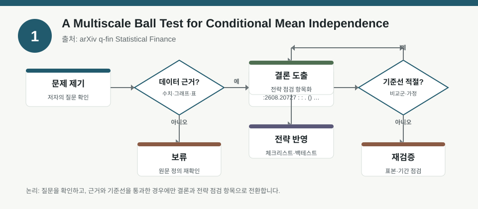
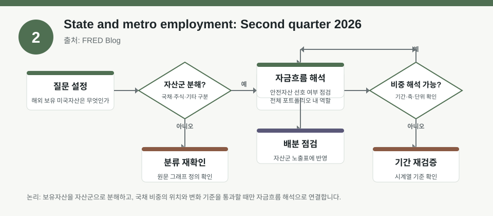
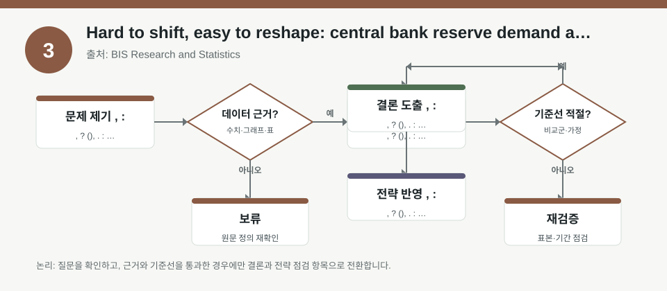

핵심 요약
- 결론: 이번 자료들은 “정확한 수치 예측”보다 “팩터 노출, 정책 민감도, 분산·리스크 구조를 어떻게 읽을지”를 점검하는 데 유용합니다.
- 원칙: 아래 수치와 범위는 제공된 메타데이터 기준 요약이며, 투자 판단용 사실로 단정하기보다 원문에서 검증해야 합니다.
주목할 자료
| 번호 | 자료 | 출처 | 원문 | 핵심 내용 | 데이터 포인트 | 리스크/한계 |
|---|---|---|---|---|---|---|
| 1 | A Multiscale Ball Test for Conditional Mean Independence | arXiv q-fin Statistical Finance | 원문 보기 | 조건부 평균 독립성 검정의 지역적·다중 스케일 신호를 포착하는 통계적 방법 제안 | 멀티스케일 로컬 평균 차이, 팩터 비선형성·국소 의존성 점검 포인트 | 표본 크기, 스케일 선택, 실전 포트폴리오 성과와의 연결은 원문 검증 필요 |
| 2 | State and metro employment: Second quarter 2026 | FRED Blog | 원문 보기 | 미국 고용 증가율이 완만히 개선됐지만 주별·도시권별 편차가 큰 점을 강조 | 전국 고용 증가율 0.3%, 38개 주 고용 증가, 지역별 분산 확대 | 지역 고용 지표가 업종·주가에 미치는 경로는 산업 구성과 시차를 함께 확인해야 함 |
| 3 | Hard to shift, easy to reshape: central bank reserve demand and frictions | BIS Research and Statistics | 원문 보기 | 중앙은행 준비금 수요와 마찰이 QT 한계를 좌우한다는 점을 분석 | 준비금 수요 결정요인, 유동성·규제·운용 마찰, 정책금리·단기자금시장 민감도 | QT 강도, 은행 준비금 탄력성, 단기금리 파급은 가정에 따라 달라 원문 확인 필요 |
자료별 상세
1. A Multiscale Ball Test for Conditional Mean Independence

- 핵심: 조건부 평균 독립성의 “어느 구간에서 관계가 생기는지”를 다중 스케일로 보려는 통계 검정이 핵심입니다.
- 데이터 포인트: 팩터 수익률이 전체 구간에서는 약해 보여도 특정 국면·국소 구간에서만 작동하는지 점검하는 데 연결됩니다.
- 리스크: 검정력은 표본, 차원, 스케일 선택에 민감할 수 있어 실전 백테스트와 바로 동일시하면 안 됩니다.
- 투자전략 반영 예시: KOSPI/KOSDAQ 업종 팩터를 볼 때 “전체 구간 성과”만 보지 말고 금리·환율·변동성 국면별로 신호를 분리해 체크리스트화할 수 있습니다.
- 실행 예시: 최근 3개 국면으로 나눠 동일 팩터의 설명력 변화를 비교하고, 비정상적으로 특정 국면에만 집중되는지 기록해 두는 방식이 적절합니다.
2. State and metro employment: Second quarter 2026

- 핵심: 전국 고용은 완만히 개선돼도 지역별로는 성장 편차가 커서, 단일 평균값만 보면 경기 체감과 자산 반응을 놓칠 수 있습니다.
- 데이터 포인트: 메타데이터상 미국 고용 증가율은 0.3%, 고용 증가 주는 38개로 제시되며, 이런 수치는 원문에서 표와 그래프로 재확인해야 합니다.
- 리스크: 주별·도시권별 고용 차이는 업종 믹스, 인구 이동, 정책 환경에 따라 달라져 한국 투자자도 단순 헤드라인으로 해석하면 과잉 일반화가 생깁니다.
- 투자전략 반영 예시: 한국 투자자는 미국 지역 고용이 소비재, 산업재, 금융주와 연결되는 경로를 확인하면서 KOSPI 경기민감 업종 비중과 달러 노출 점검표를 함께 볼 수 있습니다.
- 실행 예시: 미국 지역 고용이 강한 권역과 약한 권역을 나눠 관련 업종 ETF, 환율, 장단기 금리 민감도를 함께 메모하는 월간 체크리스트를 만들 수 있습니다.
3. Hard to shift, easy to reshape: central bank reserve demand and frictions

- 핵심: QT의 한계는 “준비금이 얼마나 빨리 줄어드는가”보다 “준비금 수요가 어떤 마찰 때문에 쉽게 바뀌는가”에 달려 있다는 관점입니다.
- 데이터 포인트: 준비금 수요, 유동성 규제, 지급결제 마찰, 은행의 보유 유인 같은 변수들이 단기금리와 크레딧 스프레드 경로를 해석할 때 중요합니다.
- 리스크: 중앙은행 행동, 규제 강도, 은행 시스템 구조에 따라 결과가 달라져 한국과 미국을 같은 방식으로 대응시키면 안 됩니다.
- 투자전략 반영 예시: 한국 투자자는 KOSPI 금융주·성장주·고밸류 종목을 볼 때 “금리 상승” 자체보다 단기자금시장 경색, 환율, 신용스프레드 변화를 함께 확인하는 식의 점검표를 둘 수 있습니다.
- 실행 예시: 매크로 점검표에 기준금리, 단기물 금리, 은행 준비금 관련 뉴스, 회사채 스프레드를 묶어 한 번에 확인하는 루틴을 넣는 방식이 실용적입니다.
팩터·리스크·포트폴리오 관점
- 핵심: 세 자료 모두 공통적으로 평균만 보지 말고 국소 구간, 지역 분산, 제도적 마찰을 함께 봐야 포트폴리오 리스크를 덜 오독하게 됩니다.
- 검수: 제공된 메타데이터에는 상세한 추정치·표본 설계·강건성 검정이 없으므로, 백테스트나 실전 적용 전 원문에서 가정과 한계를 확인해야 합니다.
정리
- 결론: 팩터 검정, 지역 고용, 준비금 수요는 모두 “헤드라인 숫자”보다 “어디서, 어떤 조건에서, 어떤 리스크가 생기는지”를 읽는 자료입니다.
- 다음 확인: 원문에서 표본 기간, 변수 정의, 강건성 테스트, 국면 분할 기준을 먼저 확인한 뒤 한국 시장의 KOSPI/KOSDAQ 업종 노출과 비교해 보시기 바랍니다.